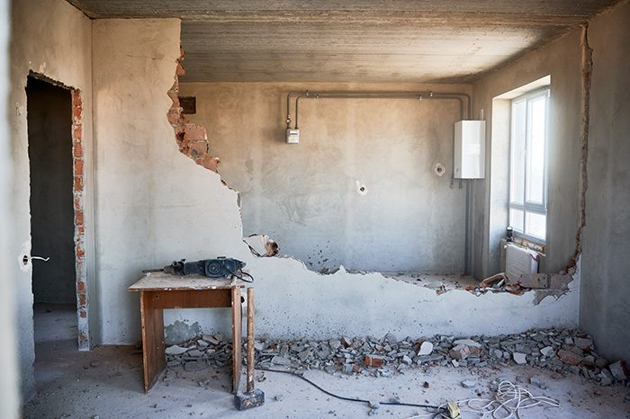
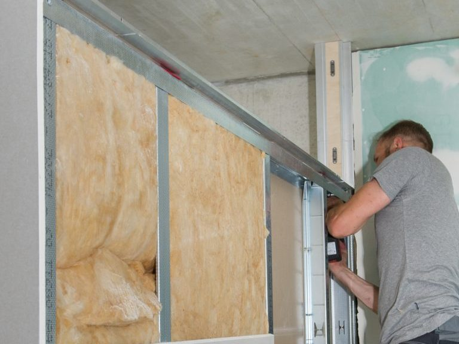
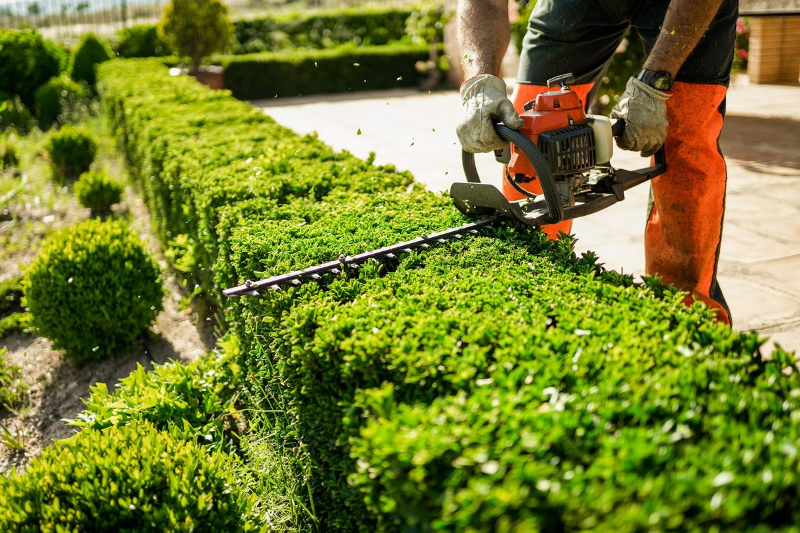
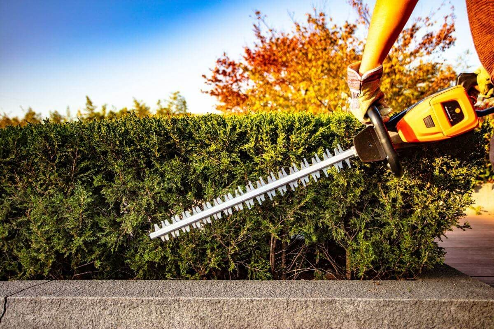
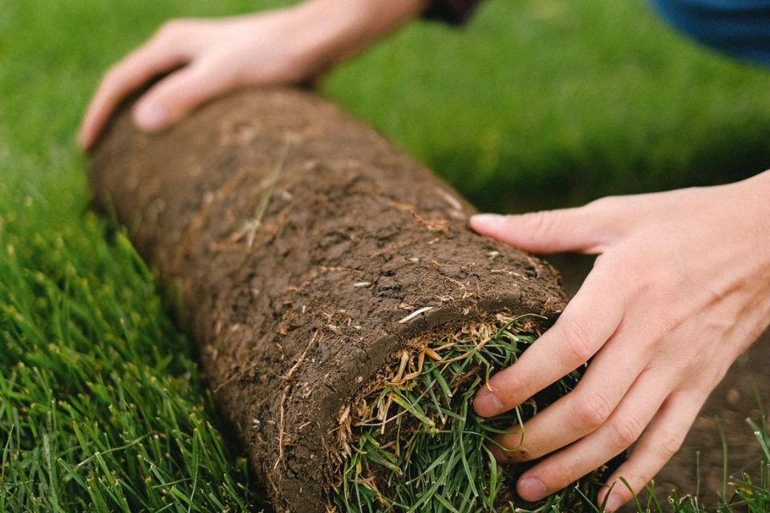
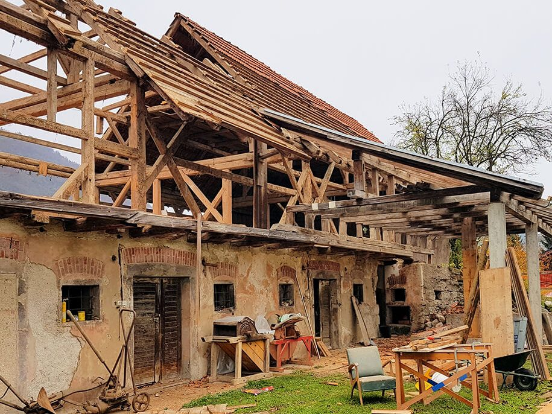
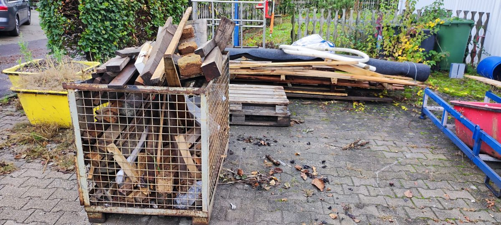
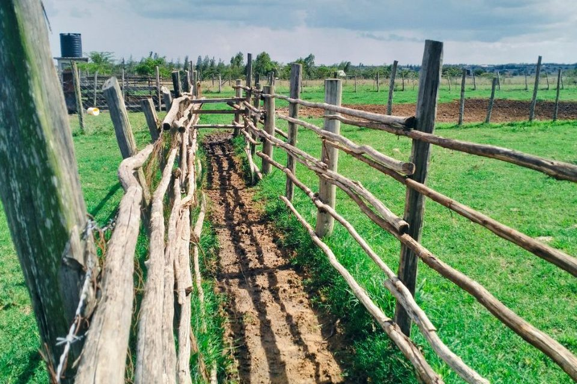

Kleinabriss
Bauten und Bauteile, die komplett weg sollen, vom Gartenhaus bis zur Garage.

Leistung · Baumfällung
Ein Baum im Garten soll weg, weil er zu groß geworden ist, krank ist oder einem Bauvorhaben im Weg steht? T&A Abriss & Rückbau fällt Bäume in Hamburg und im Umland und fährt Holz und Äste ab. Vor der Fällung klären wir mit Ihnen, ob eine Genehmigung nötig ist.
Aus einer Hand dazu: Hecke & Grünschnitt · Gartenräumung · Garten anlegen Kombi-Pakete
In Hamburg regelt die Baumschutzverordnung von 2023, welche Bäume geschützt sind. Einen geschützten Baum zu fällen oder stark zurückzuschneiden ist ohne Genehmigung verboten. Geschützt sind:
Nicht geschützt sind Obstbäume, mit Ausnahme von Walnuss und Esskastanie. In Landschafts- und Naturschutzgebieten sind in der Regel alle Gehölze geschützt, eine Fällung braucht dort immer eine Genehmigung.
Zum Nachmessen: Legen Sie in 130 cm Höhe ein Maßband um den Stamm. Zeigt es 80 cm oder mehr, gehen Sie von einem geschützten Baum aus. Geschützt ist auch der Wurzelbereich, also die Fläche unter der Krone plus 1,5 m nach allen Seiten.
Zuständig ist die Naturschutzabteilung des Bezirksamts, in dem der Baum steht. Den Antrag stellen Sie über das Serviceportal Hamburg. Antragsberechtigt sind die Eigentümer, im Kleingarten auch der Kleingartenverein. Gründe für eine Ausnahme sind zum Beispiel:
Laut hamburg.de kostet die Genehmigung zwischen 25 und 2.000 Euro Gebühr. Sie wird in der Regel mit Auflagen erteilt, etwa einer Ersatzpflanzung oder einer Ausgleichsabgabe. Die Bearbeitung kann mehrere Wochen dauern, die Genehmigung gilt meist drei Jahre. Sie muss vorliegen, bevor gefällt wird.
Ob ein Baum ausnahmsweise ohne Genehmigung weg darf, entscheidet die Naturschutzbehörde des Bezirks. Bei akuter Gefahr darf sofort gehandelt werden. Die Lage muss dann mit Fotos festgehalten und der Behörde danach gemeldet werden.
Unser Teil: Bei der Besichtigung messen wir den Stamm und sagen Ihnen, ob der Baum nach unserer Einschätzung unter die Verordnung fällt. Gefällt wird erst, wenn die Genehmigung vorliegt oder klar ist, dass keine nötig ist.
Nach § 39 Abs. 5 Bundesnaturschutzgesetz dürfen in dieser Zeit Hecken, Gebüsche und andere Gehölze nicht beseitigt oder auf den Stock gesetzt werden. Für Bäume gilt das Verbot außerhalb von Wald und gärtnerisch genutzten Grundflächen. Ausnahmen gibt es unter anderem, wenn ein Baum die Verkehrssicherheit gefährdet.
Unabhängig von der Jahreszeit sind Nester und Höhlen geschützter Tiere geschützt, etwa von Vögeln oder Fledermäusen (§ 44 Bundesnaturschutzgesetz). Am einfachsten planen Sie eine Fällung deshalb zwischen Oktober und Ende Februar. Muss es im Sommer sein, klären wir vorher, ob das zulässig ist.
Auf Ihre Anfrage melden wir uns innerhalb eines Werktags. Termine sind auch abends und samstags möglich.
Einen Preis pro Baum nennen wir nicht, dafür sind Bäume und Standorte zu verschieden. Nach der Besichtigung bekommen Sie einen Festpreis. Diese Punkte fließen ein:
Die Gebühr für die Genehmigung stellt das Bezirksamt Ihnen gesondert in Rechnung. Auch eine Ersatzpflanzung oder Ausgleichsabgabe aus der Genehmigung ist nicht Teil unseres Festpreises.
Im Kleingarten ist der Boden gepachtet. Neben dem Eigentümer kann nach der Baumschutzverordnung auch der Kleingartenverein die Genehmigung beantragen. Sprechen Sie deshalb zuerst mit dem Vorstand, bevor ein Baum auf der Parzelle gefällt wird. Kommt kein Fahrzeug an die Parzelle, tragen wir Holz und Äste bis zum Fahrzeug. Der Aufpreis steht vorher im Festpreis. Soll gleich die ganze Parzelle geräumt werden, lesen Sie weiter unter Gartenräumung.
Die Hamburger Verordnung gilt nur in Hamburg. Im Umland haben manche Städte und Gemeinden eigene Baumschutzsatzungen mit anderen Grenzen. Das klären wir dort genauso vor der Fällung. Wo wir arbeiten, zeigt die Übersicht Einsatzgebiet.
Den nächsten Schritt übernehmen wir gleich mit: ein Ansprechpartner, eine Besichtigung, ein Festpreis für alles.
Häufige Fragen
Einzelne Bäume sind ab 80 cm Stammumfang geschützt, gemessen in 130 cm Höhe. Das sind etwa 25 cm Durchmesser. Bei mehrstämmigen Bäumen und Baumgruppen gelten niedrigere Werte. Obstbäume sind ausgenommen, Walnuss und Esskastanie nicht.
Am einfachsten zwischen Oktober und Ende Februar. Vom 1. März bis 30. September gilt die Schonzeit nach § 39 Bundesnaturschutzgesetz. Nester und Höhlen geschützter Tiere sind das ganze Jahr geschützt. Ein geschützter Baum braucht außerdem immer eine Genehmigung.
Den Antrag stellen die Eigentümer bei der Naturschutzabteilung des Bezirksamts, im Kleingarten auch der Verein. Die Gebühr liegt laut hamburg.de zwischen 25 und 2.000 Euro. Oft kommt eine Ersatzpflanzung oder Ausgleichsabgabe dazu.
Sprechen Sie zuerst mit dem Vorstand Ihres Vereins. Ist der Baum nach der Baumschutzverordnung geschützt, kann der Verein die Genehmigung beantragen. Ohne Zufahrt tragen wir Holz und Äste bis zum Fahrzeug, der Aufpreis steht vorher im Festpreis.
Bei unmittelbarer Gefahr für Menschen rufen Sie die Feuerwehr unter 112. Bei akuter Gefahr darf ein Baum auch ohne vorherige Genehmigung beseitigt werden. Halten Sie die Lage mit Fotos fest und melden Sie die Fällung danach dem Bezirksamt.
Kosten
Richtpreis – den verbindlichen Festpreis gibt es nach der kostenlosen Besichtigung.
| Leistung | Richtpreis |
|---|---|
| Baum bis 10 m Höhe | 300 – 800 € |
| Baum 10–20 m Höhe | 800 – 2.500 € |
| Baumstumpf fräsen | 100 – 400 € |
Im Richtpreis enthalten: Arbeit, Abtransport und Entsorgung, beim Trockenbau Material und Montage
Nicht enthalten: Asbestsanierung, Fundament oder Bodenplatte, Elektro- und Sanitärarbeiten
Den Festpreis nennen wir nach der kostenlosen Besichtigung vor Ort oder per Video. Er hängt davon ab, was wir sehen, z. B. Zugang, Material und Menge. Alle Preise und Rechenbeispiele: Was kostet ein Abriss in Hamburg?
Festpreis anfragenKontakt
Kostenlos und unverbindlich, vor Ort oder per Video. Wir melden uns innerhalb eines Werktags.
Eine Anfrage für alles: Kreuzen Sie einfach alle Arbeiten an.
Alles aus einer Hand
Bauten und Bauteile, die komplett weg sollen, vom Gartenhaus bis zur Garage.
Ganze Gebäude abreißen, vom Einfamilienhaus bis zur Gewerbehalle, nach Besichtigung und Planung.

Räume bis auf den Rohbau zurück, z. B. vor einer Sanierung.

Gezielter Rückbau einzelner Bauteile in bewohnten Häusern.

Öffnung für eine neue Tür oder Durchreiche, tragend nur mit Statiker.

Nach dem Abriss direkt neu aufbauen, ohne zweite Firma.

Schutt von Ihrer Renovierung abholen lassen, auch ohne Abriss.

Wohnung, Keller, Dachboden oder Garage leer räumen, auch ganze Haushalte.

Garten oder Kleingarten komplett räumen: Laube, Platten, Grün, Gerümpel.

Pflaster, Gehweg- und Terrassenplatten aufnehmen und entsorgen.

Hecke schneiden, Sträucher entfernen, Grünschnitt abfahren.

Rasen mähen, Unkraut jäten, Beete pflegen, einmalig oder regelmäßig.
Laub entfernen und abfahren, den Garten winterfest machen.

Rasen säen oder Rollrasen verlegen, Beete vorbereiten, einfache Wege.

Scheunen, Ställe, Schuppen und andere Nebengebäude auf dem Hof abreißen.

Scheune, Lager und Stall räumen: Altgeräte, Holz, Metall, Reifen.

Zäune ab- und aufbauen, Feldränder und Knicks, Aufräumen nach Sturm.